Time based Routing.
Create datetime variable.
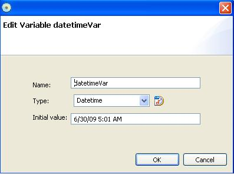
Variable is set to be 5:01 AM.
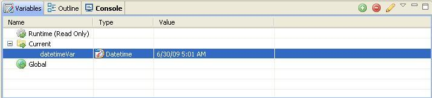
Add TimeBasedRouting actionstep.
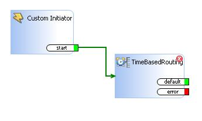
Double clicking TimeBasedRouting Actionstep brings up ActionStep
Editor. It is similar to choice actionstep.
You can add multiple time range and conditions as branching point.
Input variable value is datetimeVar.
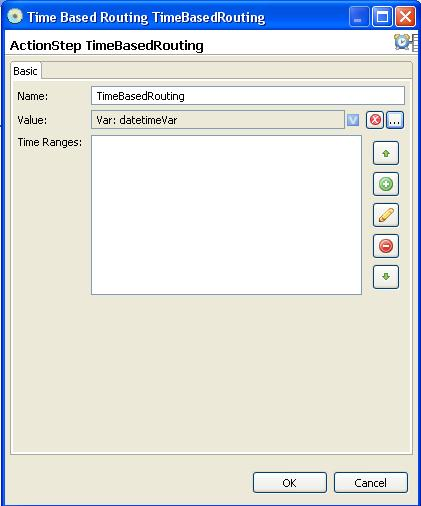
You can add time range. Clicking + sign button will bring time range
editor Dialog.
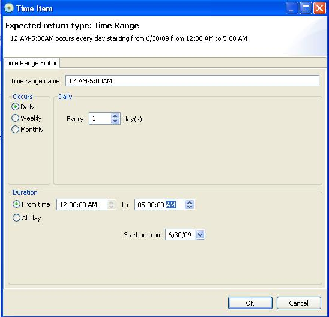
We assigned first time range to be 12:00AM - 5:00AM.
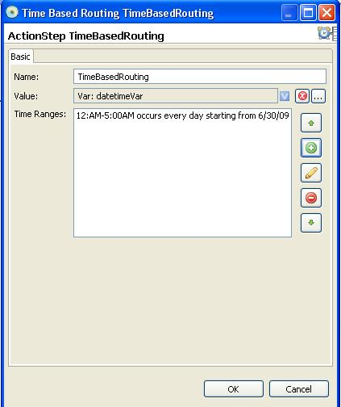
Second Range is between 5AM and 12:00PM.
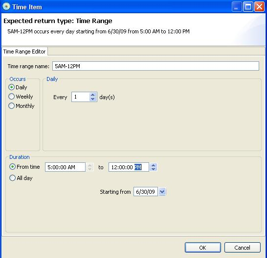
Third range is between 12:00 PM and 5:00 PM.
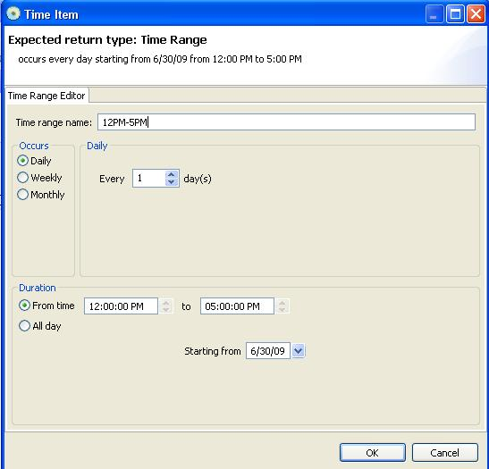
Fourth range is between 5:00PM and 11:59:59 PM. make sure it is not
12:00:00AM. PM value must not pass AM value.
This will be always false condition when it is executed. Therefore it
will not be executed. We will restrict this condition in future release.

We have 4 time range conditions to check.
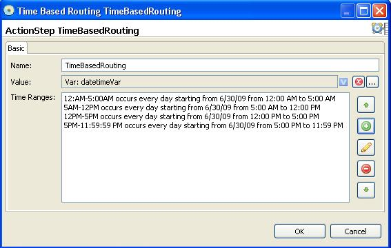
Each range conditions is reflectioned in TimeBasedRouting actionstep as
a output.
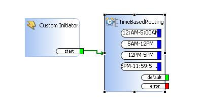
For verification and debugging purpose, add some Debuglog actionsteps
and connect them with outputs.
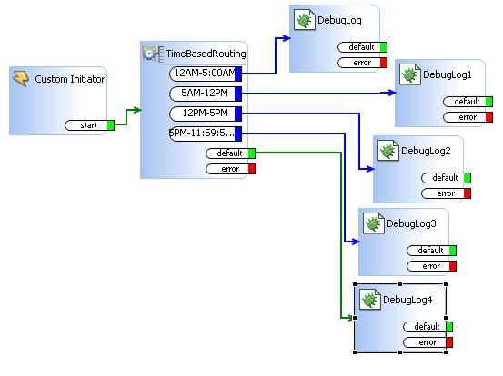
We can verify whether range conditions work correctly by debugging
saflet. Input time is datetimeVar.
Specified time is 5:01 AM. So it will take second time range
output condition path.
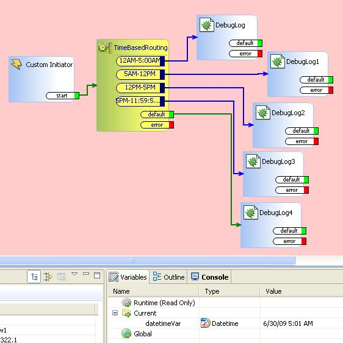
It does indeed take a correct actionpath and execute.
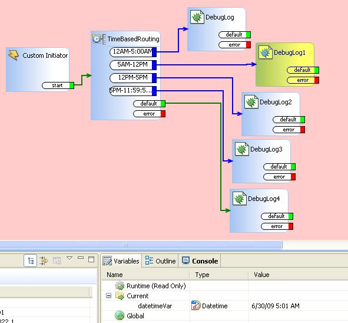
Let's change input time to be 5:01 PM. In this case, it should
take fourth time range which is between 5PM amd 11:59:59 PM.
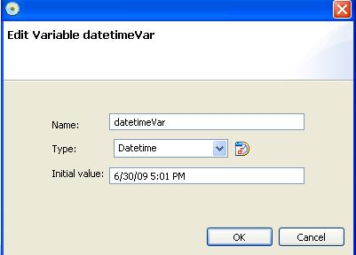
It does indeed execute correctly and take fourth time range as a
actionstep execution path.
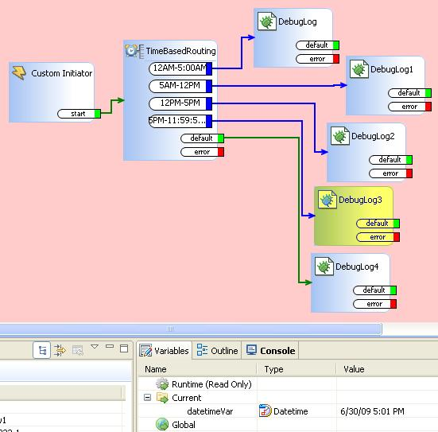
Let's change fourth time range condition. Duration should not be
between PM to AM although you can specify range in interface as you can
see.
This will be awlays false condition and will not be executed as a
actionstep execution path.
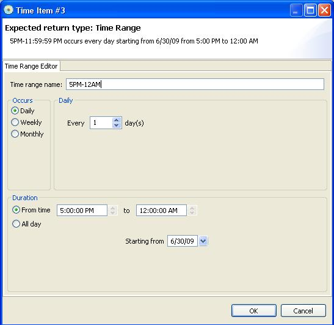
As you can see, 5:01 PM is not falling into time range you specified
and instead it takes default ouput path.
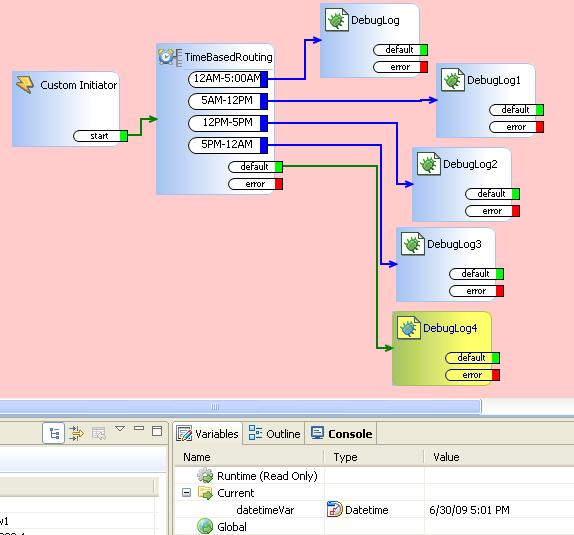
Also, you can specify value of datetimeVar as current time. You have to
use script and assign now() function.
For details, please refer to time, date and datetime tutorial.